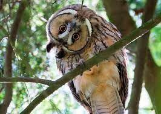

Búhos
Búho es el nombre común de aves de la familia Strigidae, del orden de los estrigiformes o aves rapaces nocturnas. Habitualmente designa especies que, a diferencia de las lechuzas, tienen plumas alzadas que parecen orejas (sus verdaderas orejas se encuentran al costado de la cabeza, a los laterales de los ojos) y presentan una coloración amarilla o naranja en el iris. Debido a que sus ojos carecen de movilidad y solo pueden ver hacia delante, pueden girar la cabeza 270°

Existen más de 200 clases de búhos.
Estas aves habitan en casi todos los lugares del
planeta, excepto en la Antártida. Son aves de rapiña,
porque se alimentan de seres vivos tales como:
peces, insectos, ratones, lagartijas y otros
animales.
Estas aves son nocturnas, y pueden cazar
en la oscuridad. Se caracterizan por especial
cuidado a no hacer ni el más mínimo ruido al
intentar agarrar su presa. Por ser aves nocturnas
tienen muy desarrollada su parte visual y auditiva.
El tamaño varía según la especie, el más pequeño es
el mochuelo que mide 13,5 cm.
Durante la época del celo invernal, los búhos buscan
a su pareja al caer la noche, antes de comenzar la
jornada de caza. El macho lanza tres llamadas profundas,
seguidas de otra -algo más aguda- de la hembra. El silencio
que sigue significa que están sellando su relación. Estos
sabios animales conviven en un régimen de monogamia estacional,
un concepto muy exitoso.
Los búhos oyen diez veces mejor que los seres humanos.
Son capaces de localizar a un ratoncillo bajo una
espesa capa de nieve y reaccionar con rapidez a
cualquier sonido. El cazador nocturno se limita
a acechar inmóvil desde su puesto de vigilancia
en lo alto de una rama. Solo mueve la cabeza de
un lado a otro en total silencio.
Su costumbre de volar sigiloso a través de las
tinieblas para caer desde las alturas sobre unas
presas desprevenidas le ha valido una posición
contradictoria en el subconsciente colectivo de
la humanidad: símbolo de la sabiduría y mensajero
del otro mundo.
Entradas sugeridas:
Mochuelos